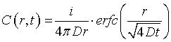
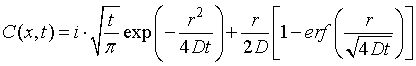
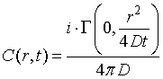

一定の時間粒子を注入した場合（ランダムウォークの計算を考える），その3
このように非常にきれいな形と鳴りました．

これは三次元の場合には，ちょうど変数変換において，分母の変数が消えてしまうためで，1，2次元ではそうはいきません． 計算で出せますが，ややこしいので，結果だけを（Mathematicaを使って）お示ししましょう．
一次元の場合；

二次元の場合；

となるようです．
次に，p.22の式，(2.12)を考えましょう．